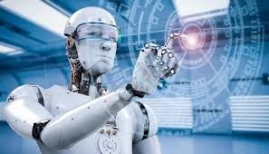

Los rápidos avances tecnológicos en inteligencia artificial (IA) han generado numerosas oportunidades a nivel mundial. Sin embargo, estos cambios repentinos también plantean profundas preocupaciones éticas. Estos surgen del potencial que tienen los sistemas de IA para incorporar prejuicios, contribuir a la degradación climática, amenazar los derechos humanos y mucho más. Semejantes riesgos asociados a la IA ya han empezado a sumarse a las desigualdades existentes, perjudicando aún más a grupos ya marginados.
.Construida a partir de data, hardware y conectividad, la IA permite que máquinas simulen aspectos de la inteligencia humana tales como la percepción, la solución de problemas, la interacción lingüística y hasta la creatividad.
La inteligencia artificial (IA) tiene el potencial de abordar algunos de los mayores desafíos de la educación actual, innovar prácticas de enseñanza y aprendizaje, y acelerar el progreso hacia el el cumplimiento del ODS 4. Sin embargo, los rápidos avances tecnológicos conllevan inevitablemente múltiples riesgos y desafíos, los cuales hasta ahora han superado todo debate político y marco regulatorio.
 Ir ala realidad aumentada ir a realidad virtual